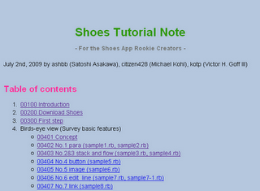

Ruby the Red Gem of Programming
This is an archived post This is an archived post
Previous
Index
Next
Shoes Tutorial Note on Heroku
July 5 2009, 2:56 PM
by Victor Goff
I sprayed
Potion
flavor style on my
Shoes Tutorial Note
and deployed to Heroku.
# shoes_tutorial_note_090705.png

Yay! :-D
ashbb
104 views and 0 responses